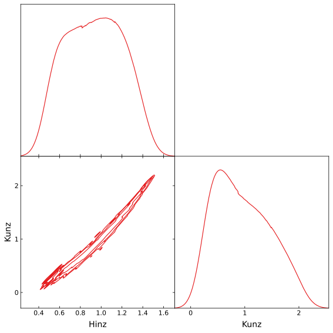

Tutorial¶
Quickstart¶
Here is how to fit a simple likelihood function:
[1]:
paramnames = ['Hinz', 'Kunz']
def loglike(z):
return -0.5 * (((z - 0.5) / 0.01)**2).sum()
def transform(x):
return 10. * x - 5.
from snowline import ReactiveImportanceSampler
sampler = ReactiveImportanceSampler(paramnames, loglike, transform)
sampler.run()
[snowline] from: [0.53863772 0.5467972 ]
[snowline] error: [0.04 0.04]
Maximum likelihood: L = -0.0 at:
Hinz 0.5000 +- 0.0100
Kunz 0.5000 +- 0.0100
[snowline] using correlated errors ...
[snowline] Initiating gaussian importance sampler
[snowline] sampling 400 ...
[snowline] sampling efficiency: 71.909%
[snowline] Optimizing proposal (from scratch) ...
[snowline] running variational Bayes ...
[snowline] reduced from 12 to 1 components
[snowline] Importance sampling 400 ...
[snowline] Likelihood function evaluations: 1245
[snowline] Status: Have 683 total effective samples, done.
logZ = -11.971 +- 0.015
Hinz 0.4998 +- 0.0099
Kunz 0.4998 +- 0.0100
[1]:
{'z': 6.323381403982087e-06,
'zerr': 9.237878841068905e-08,
'logz': -11.971256460608597,
'logzerr': 0.014503396012631953,
'ess': 0.8543162204621755,
'paramnames': ['Hinz', 'Kunz'],
'ncall': 1245,
'posterior': {'mean': [0.499806911454955, 0.49979787417928495],
'stdev': [0.009914731021003188, 0.009996358026900352],
'median': [0.5004987308759041, 0.5003176675771295],
'errlo': [0.48956728990893783, 0.48946283189215034],
'errup': [0.5097262935426254, 0.5094337381608769]},
'samples': array([[0.50847081, 0.50729167],
[0.4952125 , 0.50539525],
[0.48368112, 0.49508479],
...,
[0.49290512, 0.50460782],
[0.49523572, 0.50106949],
[0.48982832, 0.51057381]])}
This gave us error estimates and even estimated the evidence (Z)!
[2]:
print("Loglikelihood was called %d times." % sampler.results['ncall'])
Loglikelihood was called 1245 times.
Visualisation¶
[3]:
import corner
corner.corner(sampler.results['samples'], labels=paramnames, show_titles=True);
[3]:

Advanced usage¶
Lets try a function that cannot be described by a simple gaussian.
[4]:
paramnames = ['Hinz', 'Kunz'] #, 'Fuchs', 'Gans', 'Hofer']
def loglike_rosen(theta):
a = theta[:-1]
b = theta[1:]
return -2 * (100 * (b - a**2)**2 + (1 - a)**2).sum()
def transform_rosen(u):
return u * 20 - 10
sampler = ReactiveImportanceSampler(paramnames, loglike_rosen, transform=transform_rosen)
sampler.run(min_ess=1000, max_ncalls=1000000)
[snowline] from: [0.54717739 0.55969227]
[snowline] error: [0.04 0.04]
Maximum likelihood: L = -0.0 at:
Hinz 1.00 +- 0.48
Kunz 1.00 +- 0.97
[snowline] using correlated errors ...
[snowline] Initiating gaussian importance sampler
[snowline] sampling 400 ...
[snowline] sampling efficiency: 14.274%
[snowline] Optimizing proposal (from scratch) ...
[snowline] running variational Bayes ...
[snowline] reduced from 10 to 2 components
[snowline] Importance sampling 400 ...
[snowline] Likelihood function evaluations: 1269
[snowline] Status: Have 61 total effective samples, sampling 560 next.
[snowline] sampling efficiency: 7.681%
[snowline] Optimizing proposal (from previous) ...
[snowline] running variational Bayes ...
[snowline] reduced from 10 to 2 components
[snowline] Importance sampling 560 ...
[snowline] Likelihood function evaluations: 1829
[snowline] Status: Have 323 total effective samples, sampling 784 next.
[snowline] sampling efficiency: 23.772%
[snowline] Optimizing proposal (from previous) ...
[snowline] running variational Bayes ...
[snowline] reduced from 10 to 2 components
[snowline] Importance sampling 784 ...
[snowline] Likelihood function evaluations: 2613
[snowline] Status: Have 746 total effective samples, sampling 1097 next.
[snowline] sampling efficiency: 34.803%
[snowline] Optimizing proposal (from scratch) ...
[snowline] running variational Bayes ...
[snowline] reduced from 9 to 4 components
[snowline] Importance sampling 1097 ...
[snowline] Likelihood function evaluations: 3710
[snowline] Status: Have 993 total effective samples, sampling 1535 next.
logZ = -8.122 +- 0.026
Hinz 0.91 +- 0.32
Kunz 0.93 +- 0.56
[4]:
{'z': 0.0002968419764972986,
'zerr': 7.845772303216482e-06,
'logz': -8.122310626424401,
'logzerr': 0.026087546228009018,
'ess': 0.30642669062940425,
'paramnames': ['Hinz', 'Kunz'],
'ncall': 3710,
'posterior': {'mean': [0.9117452053398974, 0.9297615245398352],
'stdev': [0.3167845248031876, 0.5637112423098553],
'median': [0.9346675034842722, 0.8729814345177118],
'errlo': [0.548905669785654, 0.2971737231948133],
'errup': [1.2663713242314927, 1.603133862348642]},
'samples': array([[0.8595748 , 0.76244927],
[0.99889393, 0.95228364],
[0.49704 , 0.21610045],
...,
[1.02288248, 0.97985744],
[1.38007393, 1.79347217],
[1.32201573, 1.77628546]])}
This already took quite a bit more effort.
[5]:
print("Loglikelihood was called %d times." % sampler.results['ncall'])
Loglikelihood was called 3710 times.
Lets see how well it did:
[6]:
from getdist import MCSamples, plots
import matplotlib.pyplot as plt
samples_g = MCSamples(samples=sampler.results['samples'],
names=sampler.results['paramnames'],
label='Gaussian',
settings=dict(smooth_scale_2D=3), sampler='nested')
mcsamples = [samples_g]
Removed no burn in
[7]:
import numpy as np
x = np.linspace(-0.5, 4, 100)
a, b = np.meshgrid(x, x)
z = -2 * (100 * (b - a**2)**2 + (1 - a)**2)
g = plots.get_single_plotter()
g.plot_2d(mcsamples, paramnames)
plt.contour(a, b, z, [-3, -2, -1], cmap='Reds')
plt.xlim(-0.5, 2)
plt.ylim(-0.5, 4);
[7]:
(-0.5, 4.0)

As you can see, the importance sampler was not able to perfectly follow the rosenbrock curvature. But it is a good start to roughly understand the uncertainties!
[8]:
from getdist import MCSamples, plots
import matplotlib.pyplot as plt
samples_g = MCSamples(samples=sampler.results['samples'],
names=sampler.results['paramnames'],
label='Gaussian',
settings=dict(smooth_scale_2D=3), sampler='nested')
mcsamples = [samples_g]
g = plots.get_subplot_plotter(width_inch=8)
g.settings.num_plot_contours = 3
g.triangle_plot(mcsamples, filled=False, contour_colors=plt.cm.Set1.colors)
#corner.corner(sampler.results['samples'], labels=sampler.results['paramnames'], show_titles=True);
WARNING:root:auto bandwidth for Hinz very small or failed (h=0.0002304001538467075,N_eff=39725.0). Using fallback (h=0.023210975739666625)
WARNING:root:auto bandwidth for Kunz very small or failed (h=0.00021913156297044968,N_eff=39725.0). Using fallback (h=0.024046774561344006)
Removed no burn in
